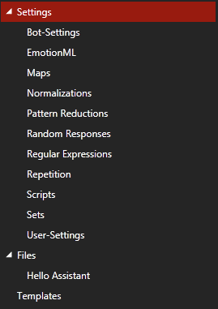

SIML Quick Start
Only a few simple SIML features have been touched in this presentation. To get into more details please visit Developer Network
Getting Started
This is a quick start tutorial on SIML bot creation. By the end of this tutorial you will be able to create your own SIML Bot with simple functionalities. Before you begin your development download Syn Bot Studio.
To download Syn Bot Studio please visit SimlBot.com
Syn Bot Studio - System Requirements
All of the following system requirements should be met in their entirety.
- Windows 7 or Above
- .NET Framework 4.5
- 1 GB RAM
- 1 GB Free Disk Space
- Minimum 1024x768 Desktop Resolution
New Project
Let’s create your first SIML Bot.

In Bot Studio,
- Click File->New->Project
- Fill in the details and select Syn Web Assistant as the base template and click Create Project
- Type in a filename and select a directory to save your new SIML Project to and click Save
You’ve now created your first SIML Project.
SIML Files Explorer

Settings
- Bot-Settings
- EmotionML
- Maps
- Normalizations
- Pattern Reductions
- Random Responses
- Regular Expressions
- Repetition
- Scripts
- Sets
- User-Settings
- Files
Files
- Hello Assistant
We will go through all of the above files in this presentation but the order of evaluation may not be the same.
Hello Assistant
Now that you have created your Project lets Chat with your new Bot.
Click on the Console tab and type Hello Assistant.
Output
Hello User!
Explanation
When you type Hello Assistant a simple pattern is matched and a response is generated.
SIML Code
<Siml>
<Concept Name="Hello Assistant">
<Model>
<Pattern>HELLO ASSISTANT</Pattern>
<Response>Hello User!</Response>
</Model>
</Concept>
</Siml>
SIML patterns are case-insensitive therefore if you would have typed hello ASSISTANT the response would still be the same.
Writing an SIML Model
- Click on
Hello Assistantfile under the Files category. - Type in the following SIML Code within the Concept
Hello Assistant.
<Model>
<Pattern>
<Item>HOW ARE YOU</Item>
<Item>HOW IS IT GOING</Item>
</Pattern>
<Response>I am doing great!</Response>
</Model>
- Click on the Build Project button on the Toolbar or press F5.
Use Alt+M to insert a Model template
Project Build is required to reload your changes and calibrate the Graph that the SIML interpreter uses.
Your SIML Code
Your new SIML Code should look like the following within the Editor.
<Siml>
<Concept Name="Hello Assistant">
<Model>
<Pattern>HELLO ASSISTANT</Pattern>
<Response>Hello User!</Response>
</Model>
<Model>
<Pattern>
<Item>HOW ARE YOU</Item>
<Item>HOW IS IT GOING</Item>
</Pattern>
<Response>I am doing great!</Response>
</Model>
</Concept>
</Siml>
Testing your Bot
Click on the Console tab and type how are you?.
Output
I am doing great!
Explanation
The SIML code you just wrote now has a model with patterns how are you and how is it going that yields a response I am doing great!. So when the user types how are you this model is activated and its response is evaluated. Note the <Item> element allows multiple patterns to be declared within the same Pattern element.
SIML Concept
A Concept is a collection of Models. The aggregation of which is your abstract idea of how the user perceives a topic while interacting with your Bot.
Declaring a Concept
An SIML has the following attributes.
| Name | Values | Description |
|---|---|---|
| Type | Public or Private | Models within a public Concept are visible globally and will be activated whenever their patterns match. Models within a private Concept are not visible unless a Response within a public Model activates it. |
| Name | Unique name | Every Concept in SIML should have a name. A name is what identifies a Concept and tells the Bot what subject is under consideration. A Concept may at times be synonymous to a Topic. |
| Repeat | True or False | Models within a Concept may or may not repeat themselves. i.e. they may be designed to be evaluated only once. In that case a Concept is declared with an attribute Repeat="False" |
SIML Model
A basic unit of knowledge in SIML is stored within a Model.
There are 3 types of Models in SIML.
- Strict
- Relaxed
- Hybrid